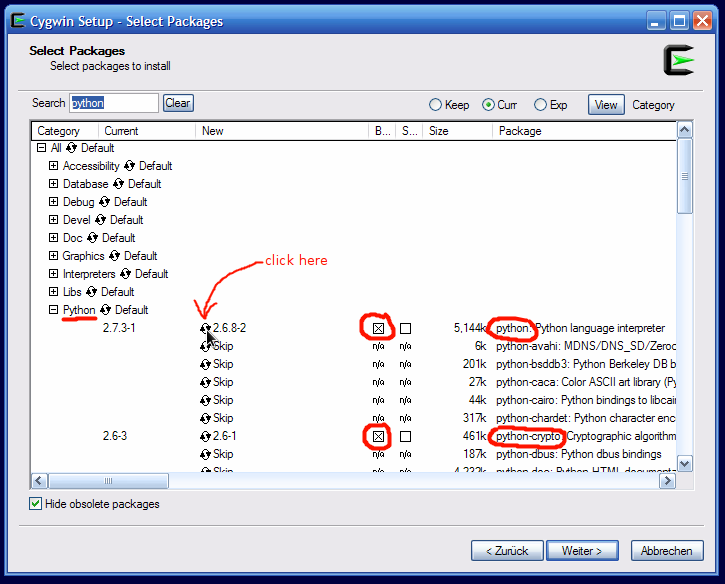
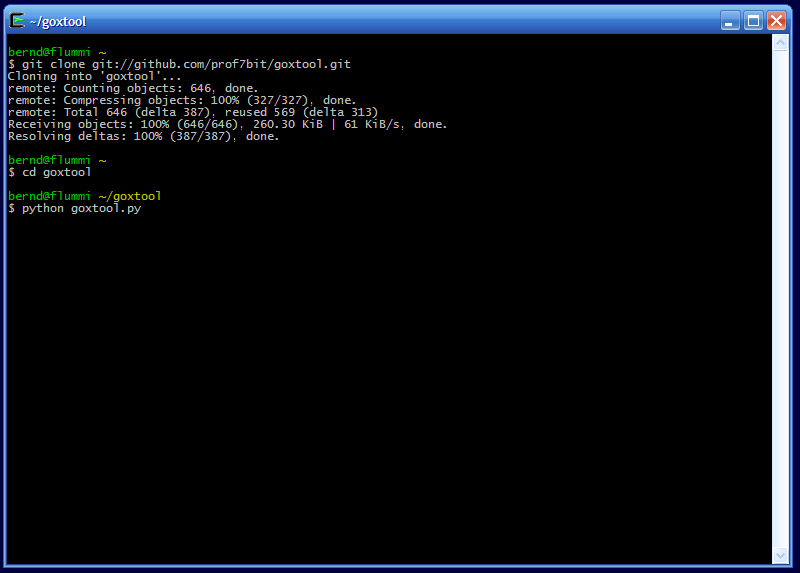
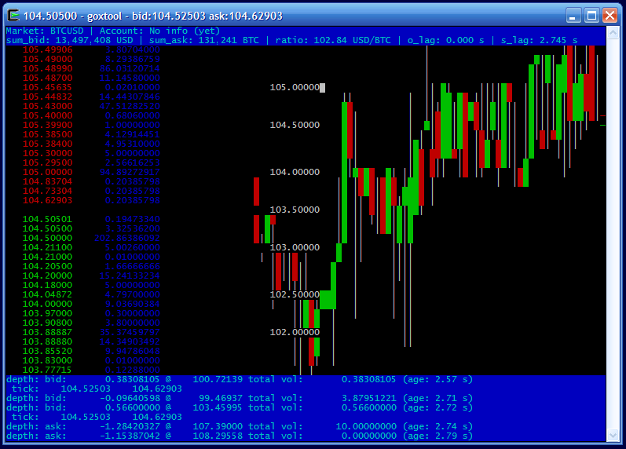

Since goxtool.py depends on ncurses (python-curses) and there exists no native version of ncurses for Windows it is necessary to use cygwin. Cygwin is a collection of tools which provide a Linux look and feel environment for Windows, it has some tools and libraries which are not natively available for windows and ncurses is one of them. Visit the cygwin website http://www.cygwin.com/ and download the cygwin installer setup.exe.
Cygwin has a package manager and you only need to install the packages that are needed to run this application. After you started setup.exe and selected install location (leave this at the default) and preferred download mirror you can select which packages to install. For installing goxtool you need these 3 packages:
Keep the setup.exe you downloaded around for later, if you decide to install even more packages or remove packages you use the same setup.exe tool to modify your cygwin installation. The following screen shots illustrate it on an old Windows XP system (I did not have any other Windows around here but it should be pretty much identical on any later version of Windows):

It will then download and install these packages along with a bunch of other packages that are needed dependencies. All the stuff will be installed into the c:\cygwin\ folder (just in case you wonder what all these unix path names like /usr/bin/whatever mean on a Windows system: its all inside the cygwin folder which will emulate the root / of a unix file system. There you will also later find your home folder (in the terminal it will be abbreviated with a tilde ~ and its real physical location will be in c:\cygwin\home\yourname\ and goxtool will also be installed inside this folder).
After successful installation you should find a shortcut to the cygwin terminal. Open the cygwin terminal and install goxtool:
git clone git://github.com/prof7bit/goxtool.git
Now change into the goxtool folder ~/goxtool
cd goxtool
and start it
python goxtool.py
Note that unlike described on the main goxtool website we unfortunately cannot start it with ./goxtool.py because it will not find the executable python2 from the shebang, there is only python on cygwin (which is the same) so we just manually invoke the python interpreter by calling its name. This also applies to all other commands from the main website or mentioned on the forums:
Wherever it says: ./goxtool.py --some-options
--what-ever
simply replace it with: python goxtool.py --some-options
--what-ever
I have made a screen shot of the steps above:

and now goxtool should start and can be used normally as described in the user manual (make sure the terminal windows is large enough so it won't do ugly line breaks. If everything is done right it will look like in the screen shot below and now you can continue with the instructions in the main user manual, just remember that when it cannot find python2 then start it with python like explained above.
